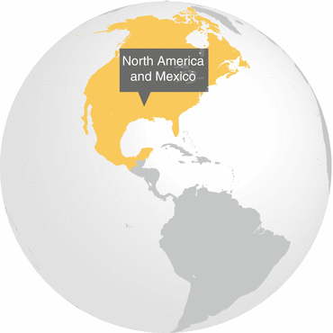
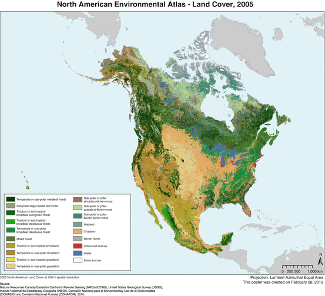

North America contains some of the most urbanized landscapes in the world. In the United States (U.S.) and Canada, approximately 80 % of the population is urban, with Mexico slightly less (Kaiser Family Foundation 2013). Population growth combined with economic growth has fueled recent urban land expansion in North America. Between 1970 and 2000, urban land area expanded at a rate of 3.31 % (Seto et al. 2011) creating unique challenges for conserving biodiversity and maintaining regional and local ecosystem services.
At the continental scale, North America has only a small amount of its surface in developed land cover (Latifovic et al. 2012). As of 2005, approximately 0.9 % of the continent was classified as developed land (Fig. 14.1) (Commission for Environmental Cooperation 2013). Although not directly comparable along the three countries, Canadian mapping efforts reported approximately 0.2 % (or approximately 199,700 km2) of the country classified as “settlements” (Statistics Canada 2012) and in Mexico, the governmental mapping agency reported about 0.6 % (or about 118,400 km2) of the country as “human settlements” for the 2002–2005 time period (Jimenez Nava 2008). However, this relatively small urban and built up land area has had intense impacts on non-urban landscapes (Grimm et al. 2000).

Fig. 14.1
Land cover in North America, 2005 (Published with kind permission of ©Commission for Environmental Cooperation 2005, part of The North American Land Change Monitoring System (NALCMS), a joint project between the United States, Canada, and Mexico. All Rights Reserved)
In the U.S., urbanization continues to drive conversion of a variety of land covers and uses to urban development with approximately 4–6 % (an approximate range of 323,200–484,800 km2) of land classified as developed in the conterminous U.S. (U.S. Department of Agriculture 2009; Multi-Resolution Land Characteristics Consortium 2012). Between 1973 and 2000, new developed (urban and built-up) land cover in the conterminous United States came primarily from conversion of agriculture, forest, grassland/shrublands, and wetlands (Auch et al. 2012). Agricultural land cover supplied the most new developed land during this time period (an estimated 34,142 km2) and wetlands the least (an estimated 2,792 km2). Conversion of agriculture to developed land was a consistent pattern across the country whereas conversion of forest to developed land was more concentrated in the eastern half of the U.S., as well as the Pacific Northwest, and grassland/shrubland conversion occurred mostly in the western half of the U.S. Wetland to developed land cover conversion was primarily concentrated in the Southeast (Sleeter et al. 2013). Overall, the U.S. Geological Survey’s Land Cover Trends project estimated a 77,529 km2 increase in developed land in the conterminous U.S. between 1973 and 2000, a 33 % change from 1973 (Sleeter et al. 2013).
Developed land use conversions directly impact other land covers and the ecosystem services they provide (see Chap. 10). Even though estimates of developed land in North America as a whole are small compared to the continent’s total land extent, geographic scale is critical. The land change intensity at the local or even regional levels can be much more important than urbanization at the national or continental scales. Urbanization also reaches far beyond the local or regional hinterlands relying on additional land uses including agriculture, forestry, and mining to supply urban populations with ecosystem-derived goods and services. The indirect impacts of urbanization by land uses ancillary to supporting metropolitan regions can also affect non-urban ecosystem services and bring land change to remote rural areas of the continent.
Given diverse histories, cultures, and social-ecological traditions in North American cities, dynamics of urbanization vary widely across the continent. Cities in the U.S. and Canada share a complex pattern of shrinking and/or shifting patterns of population in central parts of the cities coupled with sprawling development in outer suburbs and exurban areas. Predictions for future urbanization patterns range from additional shrinkage in cities with decaying urban cores to rapid expansion in urban regions where new economic centers have been developed, with continued rapid growth in megacities such as New York City (see Chap. 19) and Mexico City. However, despite decades of theoretical and methodological improvements, land change models are still poor in predicting future growth patterns (Pontius et al. 2008).
Metropolitan areas often include substantial amounts of natural and semi-natural remnant habitats that are under threat of development or impaired by habitat changes tied to changing land management practices. For example, vacant land is an underutilized yet persistent part of the urban fabric in inner cities and older suburbs (Burkholder 2012). In the U.S., vacant land in cities of more than 100,000 people has historically varied between 19 and 25 % of total land area, while for cities with populations greater than 250,000, vacant land regularly comprises between 12.5 and 15 % of total land area (Kremer et al. 2013). Research on urban vacant land is growing, but has yet to reveal the value of this significant proportion of urban land area for biodiversity and ecosystem services (but see McPhearson et al. 2013).
Urban areas contain a diverse range of habitats created and managed by homeowners, property managers, and local governments. Biodiversity conservation programs in North American cities are enhanced by a long tradition of urban wildlife and urban forestry programs run by state/provincial and local governments. These programs have resulted in habitat conservation and restoration projects, tree planting and urban greening efforts (McPhearson et al. 2010), and efforts to involve local residents in conservation projects near where they live. For example, the MillionTreesNYC program in New York City, a public-private partnership between the city’s Department of Parks & Recreation and the non-profit New York Restoration Project, will plant one million new trees in the city to expand canopy cover and increase the delivery of related ecosystem services (McPhearson 2011). To date over 650,000 trees have been planted since the program began in 2007 (see Chap. 19).
Non-governmental organizations have also been involved in biodiversity conservation programs in North American cities. Their efforts include volunteer-led monitoring and restoration projects, programs promoting conservation practices in yards and gardens, and education and advocacy programs (Connolly et al. 2013). Indeed, urban ecosystems represent unique opportunities to expand urban environmental education (Tidball and Krasny 2010; McPhearson and Tidball in press). In the U.S., extension programs run by state universities provide information on conservation practices to urban residents and to local governments.
Rapid growth, land use, tourism and development, and regional and global demand for natural resources have been altering the land and seascapes of North America, which, combined with Central America, is home to four Biodiversity Hotspots (Myers et al. 2000) and the most biologically important desert wilderness areas on Earth. Stretching south from California, U.S. and its unique chaparral and redwood forests toward Panama through woodlands, deserts, and rain forests, North and Central America is rich in unique and threatened wildlife, including black howler monkeys, yellow-headed parrots, California condors, and rodents found nowhere else on Earth.
Urban areas increasingly expand into wild lands (Pickett et al. 2011) affecting the biodiversity in these habitats, which often include endemic species and habitats critical for the provisioning of urban ecosystem services. Cities are no longer compact, but rather sprawl in fractal configurations (Batty 2008). Indeed, even for many rapidly growing metropolitan areas, suburban zones are growing much faster than other zones (Katz and Bradley 1999). These new forms of urban development including exurbs, edge cities, and housing interspersed in forest, shrubland and desert, bring people possessing urban financial equity, habits, and expectations into daily contact with habitats formerly controlled by agriculturalists, foresters and conservationists (Pickett et al. 2011).
Cities often harbor rich biodiversity, and this is true of North American cities. In New York City for example, 85 % of the diversity of flora in New York State exists within the city’s municipal boundaries (see Chap. 19). However, the composition of urban and suburban ecosystems differ from wild and rural ecosystems. Species richness has increased in urban forests of the U.S. as a whole, but this is largely due to the presence of exotic species (Zipperer et al. 1997). Exotic species often have a large presence in urban vegetation. In the U.S. urban flora in general, the proportion of exotics has steadily increased over time (McKinney 2002). Rapoport (1993) found the number of non-cultivated species decreased from fringe toward urban centers in several Latin American cities. For example, in Mexico City, there was a linear decrease in the number of species per hectare from 30–80 encountered in suburbs to 3–10 encountered in the city center. Paths in rural recreation areas (Rapoport 1993) and in urban parks (Drayton and Primack 1996) enhance the presence of exotics (Pickett et al. 2011). In an urban park in Boston, of the plant species present in 1894, 155 were absent by 1993, amounting to a decrease from 84 to 74 % native flora. Sixty-four species were new. Similar patterns were found in New York City. In a review of historical records of urban flora in NYC, as of 2000, 42.6 % of the native plant species have been extirpated (DeCandido et al. 2004).
Urbanization affects biodiversity through direct and indirect changes in biotic interactions and trophic dynamics that affect the viability and distribution of species (Marzluff 2001; Hansen et al. 2005). Land cover change and human activities introduce novel disturbances, chronic stresses, unnatural shapes, and/or new degrees of connectedness (Urban et al. 1987). Ecological studies are showing complex relationships between settlement patterns and selective phenotype trait diversity (Faeth et al. 2005). Such complexity is particularly evident when examining the relationship between urban development and biodiversity across a gradient of urbanization. Marzluff (2005) showed that bird diversity in the Central Puget Sound region (U.S.) peaks at intermediate levels of human settlement primarily because of the colonization of intermediately disturbed forests by early successional native species, despite the extinction of native forest birds which increases linearly with loss of forest. Intermediate disturbance due to increased landscape heterogeneity appears to drive diversity (Marzluff 2005).
The vast majority of all urban ecological studies so far have been conducted in cities in Europe or North America (Chap. 27), yet there is still a lack of experimental approaches, and most urban biodiversity studies have focused on either birds or plants. There is also a lack of long-term data, but two Long-Term Ecological Research (LTER) sites in North America, Baltimore and Phoenix, are generating valuable information on the dynamics of the urban landscape from an ecological and biodiversity perspective (Grimm et al. 2000; Pickett et al. 2011). Recent findings from observations in urban ecosystems are showing that new environmental gradients and novel ecosystem functions emerge from complex human-natural interactions, indicating the need to revisit traditional concepts and methods for studying biodiversity and ecosystem function in urbanizing regions (Alberti 2010).
Long-term study of urban systems can serve as model systems for examining the interaction of social and biophysical patterns and processes more broadly (Collins et al. 2001; Redman et al. 2004). In addition, many of the changes in urban areas anticipate the otherwise unprecedented alterations that will follow global environmental change in other ecosystems (Grimm et al. 2008). As urbanization continues to expand, city planners and policymakers need to consider how ecological resources can be strategically developed and managed sustainably to meet the needs of urban populations (McPhearson et al. 2013). Developing a blueprint for mapping and modeling biodiversity and ecosystem services (Crossman et al. 2013) in urban regions will be important for cross-city comparisons and more nuanced understanding of the contribution of urban ecosystems to human livelihoods in cities and urbanized regions (see Chap. 10).
References
Alberti, M. (2010). Maintaining ecological integrity and sustaining ecosystem function in urban areas. Current Opinion in Environmental Sustainability, 2(3), 178–184.CrossRef
Auch, R. F., Drummond, M. A., Sayler, K. L., Gallant, A. L., & Acevedo, W. (2012). An approach to assess land cover trends in the conterminous United States (1973–2000). In C. Giri (Ed.), Remote sensing and land cover: Principles and applications (pp. 351–367). Boca Raton: Taylor & Francis/CRC Press.CrossRef
Batty, M. (2008). The size, scale, and shape of cities. Science, 319, 769e771.CrossRef
Burkholder, S. (2012). The new ecology of vacancy: Rethinking land use in shrinking cities. Sustainability, 4(12), 1154–1172. doi:10.3390/su4061154.CrossRef
Collins, J., Kinzig, A., Grimm, N., Fagan, W., Hope, D., Wu, J., & Borer, E. (2001). A new urban ecology. American Scientist, 88(5), 416. doi:10.1511/2000.5.416.
Commission for Environmental Cooperation. (2013). Land Cover, 2005. ERDAS IMG data download accessed at http://www.cec.org/Page.asp?PageID=924&ContentID=2819. 19 Apr 2013.
Connolly, J. J., Svendsen, E. S., Fisher, D. R., & Campbell, L. K. (2013). Organizing urban ecosystem services through environmental stewardship governance in New York City. Landscape and Urban Planning, 109, 76–84.CrossRef
Crossman, N., Burkhard, B., Nedkov, S., Willemen, L., Petz, K., Palomo, I., Drakou, E. G., Martín-Lopez, B., McPhearson, T., Boyanova, K., Alkemade, R., Egoh, B., Dunbar, M., Maes. J. (2013). A blueprint for mapping and modelling ecosystem services. Ecosystem Services, 44–14. doi:10.1016/j.ecoser.2013.02.001.
Decandido, R., Muir, A. A., & Gargiullo, M. B. (2004). A first approximation of the historical and extant vascular flora of New York City: Implications for native plant species conservation. Torrey Botanical Society, 131(3), 243–251.CrossRef
Drayton, B., & Primack, R. B. (1996). Plant species lost in an isolated conservation area in metropolitan Boston from 1894 to 1993. Conservation Biology, 10, 30e39.
Faeth, S. H., Warren, P. S., Shochat, E., & Marussich, W. A. (2005). Trophic dynamics. BioScience, 55, 399–407.CrossRef
Grimm, N. B., Grove, J. M., Pickett, S. T. A., & Redman, C. L. (2000). Integrated approaches to long-term studies of urban ecological systems. BioScience, 50(7), 571–584.CrossRef
Grimm, N. B., Faeth, S. H., Golubiewski, N. E., Redman, C. L., Wu, J., Bai, X., & Briggs, J. M. (2008). Global change and the ecology of cities. Science, 319(5864), 756–760. doi:10.1126/science.1150195.PubMedCrossRef
Hansen, A. J., Knight, R. L., Marzluff, J. M., Powell, S., Brown, K., Gude, P. H., & Jones, K. (2005). Effects of exurban development on biodiversity: Patterns, mechanisms, and research needs. Ecological Applications, 15, 1893–1905.CrossRef
Jimenez Nava, F. J. (2008). Land cover in Mexico. In J. C. Campbell, K. B. Jones, J. H. Smith, & M. T. Koeppe (Eds.), North America land cover summit (pp. 13–20). Washington, DC: Association of American Geographers.
Kaiser Family Foundation. (2013). Global health facts – Urban population (Percent of total population living in urban areas). http://kff.org/global-indicator/urban-population/. Accessed 10 July 2013.
Katz, B., & Bradley, J. (1999). Divided we sprawl. Atlantic Monthly, 284, 26e42.
Kremer, P., Hamstead, Z., & McPhearson, T. (2013). A social-ecological assessment of vacant lots in New York City. Landscape and Urban Planning. doi:10.1016/j.landurbplan.2013.05.003.
Latifovic, R., Homer, C., Ressl, R., Pouliot, D., Hossain, S. N., Colditz, R. R., Olthof, I., Giri, C. P., & Victoria, A. (2012). North American land-change monitoring system. In C. Giri (Ed.), Remote sensing and land cover: Principles and applications (pp. 303–323). Boca Raton: Taylor & Francis/CRC Press.CrossRef
Marzluff, J. M. (2001). Worldwide urbanization and its effects on birds. In J. M. Marzluff, R. Bowman, & R. Donnelly (Eds.), Avian ecology and conservation in an urbanizing world (pp. 19–47). Norwell: Kluwer Academic Publishers.CrossRef
Marzluff, J. M. (2005). Island biogeography for an urbanizing world: How extinction and colonization may determine biological diversity in human-dominated landscapes. Urban Ecosystems, 8, 155–175.CrossRef
McKinney, M. L. (2002). Urbanization, biodiversity, and conservation. BioScience, 52(10), 883–890. doi:10.1641/0006-3568(2002) 052.CrossRef
McPhearson, P. T. (2011). Toward a sustainable New York city: Greening through urban forest restoration. In M. Slavin (Ed.), The triple bottom line: Sustainability principles, practice, and perspective in America’s cities (pp. 181–204). Washington, DC: Island Press.
McPhearson, T., & Tidball, K. G. (In Press). Disturbances in urban social-ecological systems: Niche opportunities for environmental education. In M. Krasny & J. Dillon (Eds.), Trading zones in environmental education: Creating transdisciplinary dialogue. New York: Peter Lang (In press).
McPhearson, P. T., Feller, M., Felson, A., Karty, R., Lu, J., Palmer, M., & Wenskus, T. (2010). Assessing the effects of urban forest restoration effort of MillionTreesNYC on the structure and functioning of New York city ecosystems. Cities and the Environment, 3(1): Article 7, 21pp.
McPhearson, T., Kremer, P., & Hamstead, Z. (2013). Mapping ecosystem services in New York City: Applying a social-ecological approach in urban vacant land. Ecosystem Services. doi:10.1016/j.ecoser.2013.06.005.
Multi-Resolution Land Characteristics Consortium. (2012). National land cover dataset (NLCD 2006) product statistics. http://www.mrlc.gov/nlcd06_stat.php. Accessed 17 Apr 2013.
Pickett, S. T. A., Cadenasso, M. L., Grove, J. M., Boone, C. G., Groffman, P. M., Irwin, E., Kaushal, S. S., Marshall, V., McGrath, B. P., Nilon, C. H., Pouyat, R. V., Szlavecz, K., Troy, A., & Warren, P. (2011). Urban ecological systems: Scientific foundations and a decade of progress. Journal of Environmental Management, 92(2011), 331–362.PubMedCrossRef
Pontius, R., Boersma, W., Castella, J.-C., Clarke, K., de Nijs, T., Dietzel, C., Duan, Z., Fotsing, E., Goldstein, N., Kok, K., Koomen, E., Lippitt, C., McConnell, W., Mohd Sood, A., Pijanowski, B., Pithadia, S., Sweeney, S., Trung, T., Veldkamp, A., & Verburg, P. (2008). Comparing the input, output, and validation maps for several models of land change. The Annals of Regional Science, 42(1), 11–37.CrossRef
Rapoport, E. H. (1993). The process of plant colonization in small settlements and large cities. In M. J. McDonnell & S. T. A. Pickett (Eds.), Humans as components of ecosystems: The ecology of subtle human effects and populated areas (p. 190e207). New York: Springer.
Redman, C. L., Grove, J. M., & Kuby, L. H. (2004). Integrating social science into the Long-Term Ecological Research (LTER) network: Social dimensions of ecological change and ecological dimensions of social change. Ecosystems, 7, 161–171.CrossRef
Seto, K. C., Fragkias, M., Güneralp, B., & Reilly, M. K. (2011). A meta-analysis of global urban land expansion. PloS ONE, 6(8), e23777. doi:10.1371/Citation.PubMedCrossRef
Sleeter, B. M., Sohl, T. L., Loveland, T. R., Auch, R. F., Acevedo, W., Drummond, M. A., Sayler, K. L., & Stehman, S. V. (2013). Land-cover change in the conterminous United States from 1973–2000. Global Environmental Change. http://www.sciencedirect.com/science/article/pii/S0959378013000538 25 Apr 2013.
Statistics Canada. (2012). Canada’s land cover, 2006. http://www.statcan.gc.ca/pub/16-201-x/2011000/ct036-eng.htm. 19 Apr 2013.
U.S. Department of Agriculture. (2009). Summary report: 2007 National Resource Inventory. Washington, DC/Ames: Natural Resources Conservation Service/Center for Survey Statistics and Methodology, Iowa State University. http://www.nrcs.usda.gov/Internet/FSE_DOCUMENTS/stelprdb1041379.pdf. Accessed 17 Apr 2013.
Tidball, K. G., & Krasny, M. E. (2010). Urban environmental education from a conceptual framework for civic ecology education. Cities and the Environment, 3(1), 1–20.
Urban, D. L., O’Neill, R. V., & Shugart, H. H., Jr. (1987). Landscape ecology. A hierarchical perspective can help scientists understand spatial patterns. BioScience, 37(2), 119–127.CrossRef
Zipperer, W. C., Foresman, T. W., Sisinni, S. M., & Pouyat, R. V. (1997). Urban tree cover: An ecological perspective. Urban Ecosystems, 1, 229–247.CrossRef